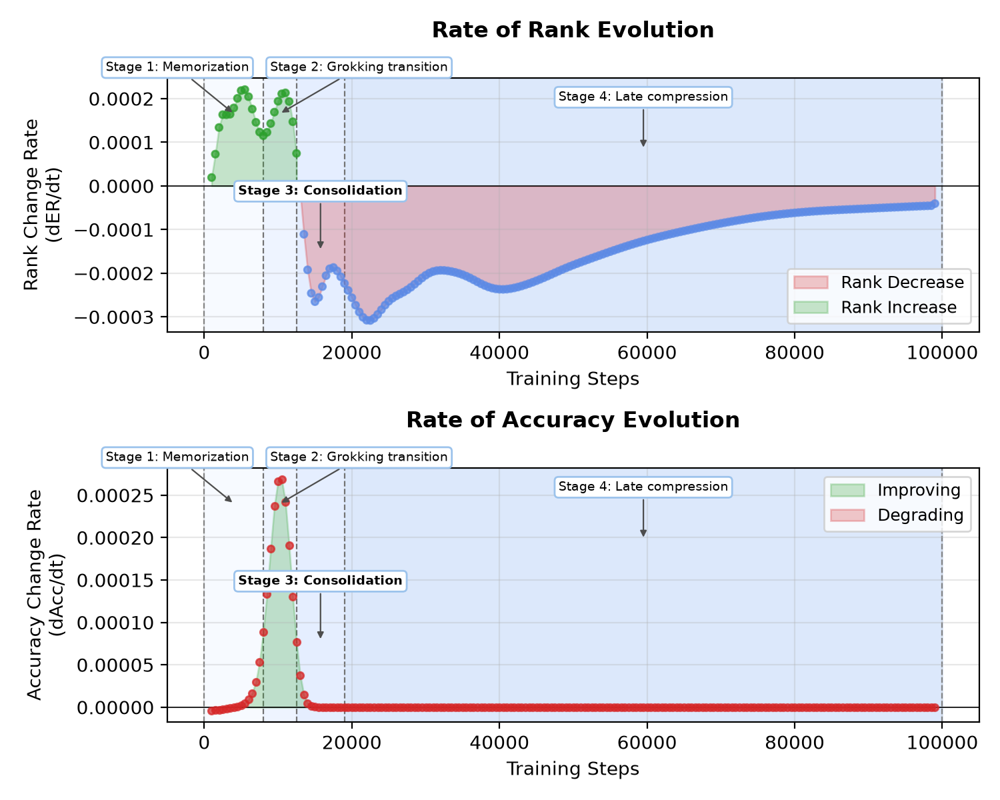
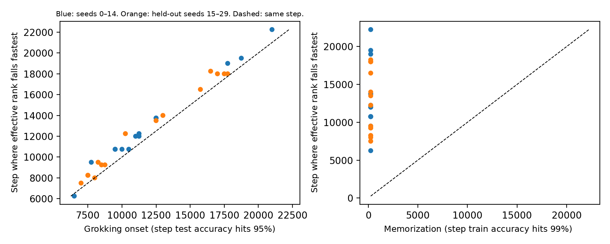
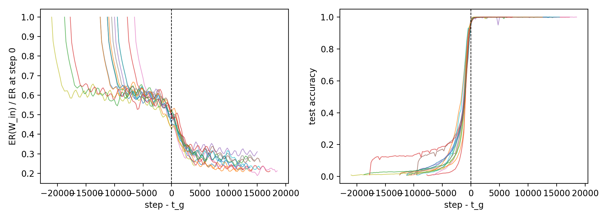
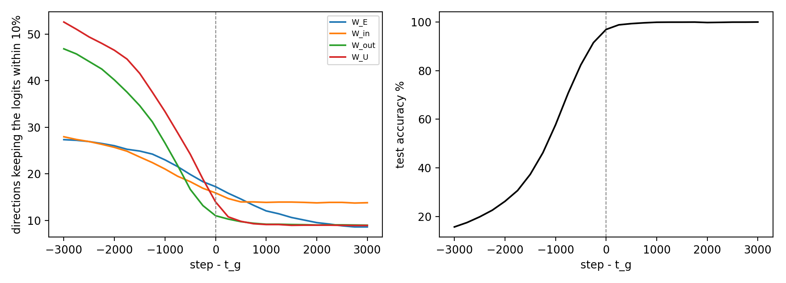
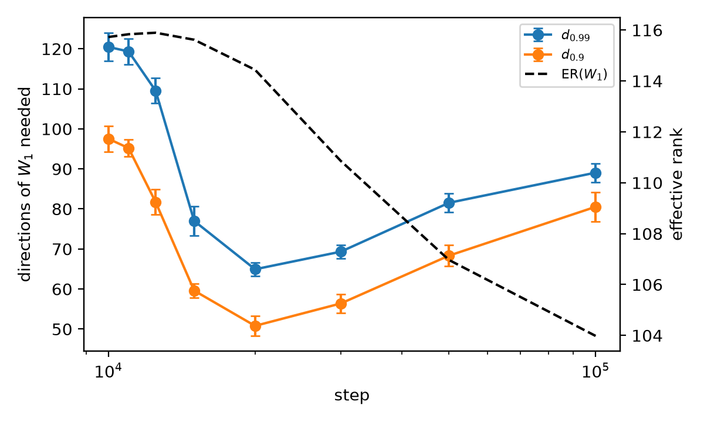
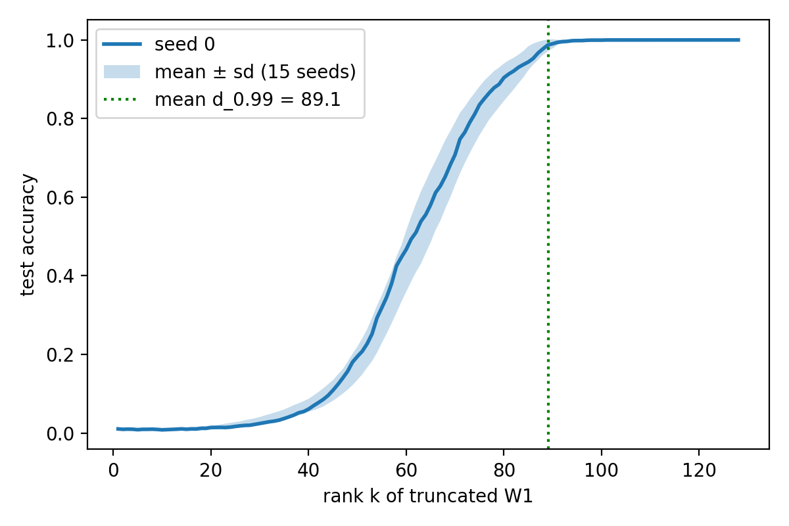
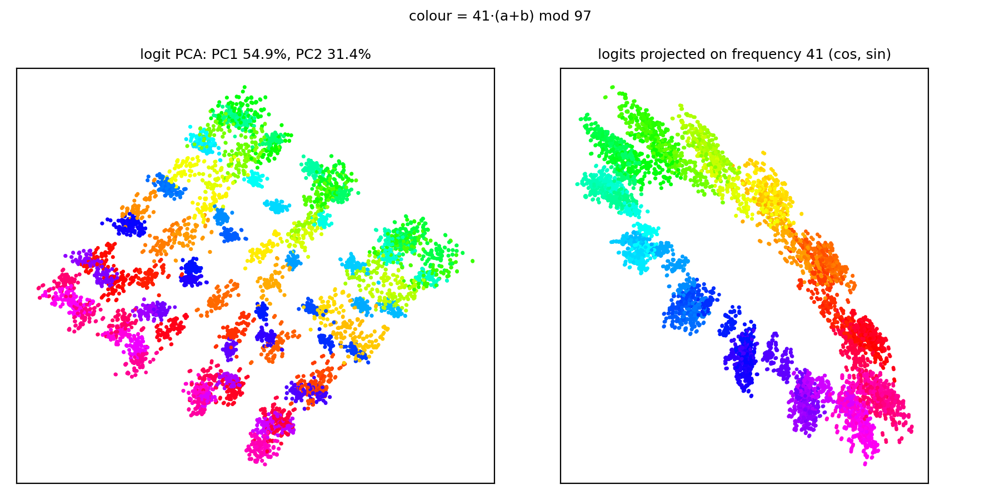

When a network groks, the effective rank of its weights falls. Is that compression the cause of generalization, or a consequence of it? Training a mean-field MLP and a one-layer transformer on modular arithmetic, we find that compression follows the grokking onset rather than memorization, that during the transition the transformer's solution crystallizes from needing 22–54% of each weight matrix's directions to just 7–11%, and that forcing low rank from the start does not make grokking come sooner. Compression is a signature of grokking, not its cause.
Grokking networks memorize first and generalize much later, and their weight matrices lose effective rank as test accuracy jumps. That observation has fuelled the idea that a pressure toward low-rank, efficient circuits causes grokking. We separate the two events in time, count directions in a way the margin cannot inflate, and impose low rank directly.
01
~900 steps
Compression follows the onset, not memorization
Every transformer memorizes within 250 steps, while onsets range from 6,500 to 21,000. The steepest rank drop lands about 900 steps after the onset, however late it comes ($r = 0.99$).
02
22–54% → 7–11%
Subspace crystallization
Judged by the outputs, the share of each transformer weight matrix's directions that the solution needs falls from 22–54% to 7–11% over the transition, from 3,000 steps before the onset to 3,000 after.
03
15 of 20
Imposing low rank does not speed grokking up
Against a factorized full-rank control, rank caps never bring the onset forward. Capping the embedding's rank stops 15 of 20 runs from grokking at all.
Grokking, in one run. A one-layer transformer learning $(a+b) \bmod 97$ (one seed). Each dot is one input pair, its logits projected onto frequency 41. As test accuracy jumps, the disc hollows into a ring, and the directions each weight matrix's outputs depend on collapse to a handful.
The Question
Grokking, memorization followed by delayed generalization, is a rare clean window into how circuits emerge from gradient descent. We know a lot about what grokking networks compute: a sparse Fourier algorithm for modular arithmetic, formed through phases of memorization, circuit formation and cleanup. A recurring observation is that the effective rank of their weight matrices falls as test accuracy jumps. We ask two questions.
Q1 Does rank compression cause grokking, or follow it?
Q2 Does the learned solution lie in the subspace spanned by a few leading directions of each weight matrix?
The usual evidence cannot settle these, for three reasons:
Timing is ambiguous. Compression is usually seen after both memorization and the rise in test accuracy, so it is unclear which of the two it follows.
Timing alone cannot show cause. That needs interventions.
Accuracy hides the margin. Truncating a weight matrix until test accuracy drops only checks which output is largest. As margins grow, more directions can be deleted before any prediction flips, so the count can fall even though the outputs still depend on those directions.
Setup
We train two architectures on $(a+b) \bmod 97$ across many random seeds, and replicate on $ab \bmod 97$ and $(a+b) \bmod 113$. The grokking onset $t_g$ is the first step with test accuracy $\geq 95\%$; the memorization step $t_{\text{fit}}$ is the first step with training accuracy $\geq 99\%$.
Our primary geometric metric is the effective rank, the exponential of the entropy of the normalized singular values:
$$ \mathrm{ER}(W) = \exp\big(H(\hat\sigma)\big), \qquad \hat\sigma_i = \sigma_i \Big/ \textstyle\sum_j \sigma_j . $$
To ask how many directions the solution needs, we replace a weight matrix $W = U\Sigma V^\top$ by its top-$k$ truncation $W_{[k]} = U_{:k}\Sigma_{:k}V_{:k}^\top$ and leave the rest of the network unchanged. Two counts follow:
$d_{0.99}$: the fewest directions that keep 99% of the test accuracy. Their span is the sufficient subspace.
$d_{\text{out}}$: the fewest directions that keep the network's outputs within 10%, i.e. $\lVert f_{[k]} - f \rVert_F \leq 0.1\,\lVert f \rVert_F$ over the test inputs.
$d_{0.99}$ can fall simply because margins grow. $d_{\text{out}}$ cannot. We call a narrowing of $d_{\text{out}}$ subspace crystallization.
Four Stages of Training
Tracking the rates of change of effective rank and test accuracy splits the MLP's training into four stages: memorization (training accuracy 97.8% by step 8,000, test accuracy below 5%), the grokking transition (onset at 12,633 ± 297), consolidation, where effective rank stays near its maximum while the margin grows, and late compression, where 99% of the total fall in effective rank happens. Rank grows while the network memorizes and only starts to fall once test accuracy has risen. Seeing the last stage requires training well past the point where test accuracy saturates.

The four training stages of the MLP (seed 0). Rate of change of the effective rank of $W_1$ (top) and of test accuracy (bottom). Effective rank grows during memorization and the transition, turns negative at $t_g$, and keeps falling.
Compression Follows the Onset
The transformer pulls memorization and generalization apart. All 29 grokked seeds fit their training set within the first 250 steps, yet their onsets range from 6,500 to 21,000 steps. Weight decay first shrinks the random initialization, which by itself lowers the effective rank of $W_{\text{in}}$ to a plateau, so we measure compression only after step 4,000. A second, sharp drop follows, and the step $t_s$ at which it is steepest tracks the onset almost exactly: Pearson $r = 0.99$, slope 1.02 (95% CI 0.98–1.07). It scatters by 506 steps around $t_g$ but by 4,234 steps around the memorization step.

Compression tracks the grokking onset, not memorization. Step of the steepest effective-rank decrease of $W_{\text{in}}$ against the grokking onset (left) and against the step at which training accuracy reaches 99% (right). Blue: seeds 0–14. Orange: held-out seeds 15–29. Dashed line: identity. If compression followed memorization, the points on the right would sit at a fixed step.
Networks that memorize without grokking compress far less:
60 ± 5%
fall in ER of $W_{\text{in}}$ in transformers that grok
15–23%
fall in the seven transformers that memorize but never grok
1.1% vs 10.5%
fall in random-label MLPs vs. grokked MLPs
Compression Does Not Start Before Test Accuracy Rises
In the MLP, compression starts after the onset in all 15 seeds, with a mean lag of 6,367 ± 3,248 steps (one-sided $t = 7.59$, $p = 1.3 \times 10^{-6}$). Granger tests agree: changes in test accuracy predict changes in effective rank in all 15 seeds, and the reverse holds in at most 6.
In the transformer, compression is part of the transition itself. The second drop begins 1,888 ± 992 steps before the onset, but only after test accuracy has already reached 10% in 28 of 29 seeds. It is steepest 905 ± 506 steps after the onset, and 63% of it happens after.

Effective rank of $W_{\text{in}}$ (relative to step 0) and test accuracy of the 14 grokked transformer seeds, aligned at each seed's own onset. The effective rank falls while the random initialization decays, plateaus at about 60% of its initial value, and drops again around $t_g$.
Replication on Held-Out Seeds and Tasks
We fixed the timing measures on seeds 0–14 and then tested them on data they had not seen. On 15 held-out transformer seeds, the steepest decrease came 850 ± 524 steps after the onset (14 of 15 seeds, the fifteenth at the onset), close to the 964 ± 499 steps on the original seeds. On $ab \bmod 97$ and $(a+b) \bmod 113$, the MLP's compression followed the onset in all 30 runs. With a Bonferroni correction over all nine $t$-tests, every test but one remains significant.
Subspace Crystallization
With a checkpoint every 250 steps and each seed aligned at its own onset, we can watch $d_{\text{out}}$ narrow while test accuracy rises. Each square below is one singular direction of a transformer weight matrix, and the filled squares are the leading directions needed to keep the network's outputs within 10%. Drag the slider or press play.
The transformer crystallizes during the transition. $d_{\text{out}}$ of each weight matrix (mean over 29 grokked seeds), test accuracy, and the restricted and excluded training losses of Nanda et al. (2023), from Table 5 of the paper. The restricted loss keeps only the key-frequency components of the logits; the excluded loss removes them.
Three thousand steps before the onset, at 16% test accuracy, the outputs depend on 22–54% of each matrix's directions ($d_{\text{out}}$ = 27–53). At the onset this is 9–18%, and 3,000 steps later 7–11% ($d_{\text{out}}$ = 9–14). For $W_{\text{in}}$, $W_{\text{out}}$ and $W_U$ it is halfway down 740–960 steps before the onset, at about 60% test accuracy, in 28 or 29 of 29 seeds.
It Coincides With Cleanup
The narrowing lines up with the cleanup phase of Nanda et al. (2023). Their restricted loss is halfway down 1,966 ± 647 steps before the onset, as the generalizing circuit forms. Their excluded loss is halfway up 1,026 ± 646 steps before the onset, as the memorizing components are removed, at the same time as $d_{\text{out}}$ narrows. $d_{\text{out}}$ adds that cleanup reduces the directions the outputs depend on, not only those the predictions depend on. Transformers that never grok narrow only slowly and stay two to nine times wider.

Directions of each weight matrix needed to keep the outputs within 10% (left) and test accuracy (right), with each seed aligned at its own onset $t_g$. The count falls during the rise in test accuracy and settles at about a tenth of each matrix's directions.
The Final Solution Uses Few Directions
At the final checkpoint, $d_{0.99}$ is 7.9% of the directions of $W_E$ (7.7 of 97), 6.8% of $W_{\text{out}}$ (8.7 of 128) and 10.2% of $W_{\text{in}}$ (13.0 of 128), and the MLP's post-activations need only 3.4% (17 of 512). These counts are not inflated by the margin: $d_{\text{out}}$ is 8.1–13.0 directions for all four matrices, roughly 6–13% of each. The leading directions really carry the solution: truncating to them keeps at least 99.26% of test accuracy, while random subspaces of the same rank keep at most 12.5%.
Accuracy Can Fake Crystallization
The MLP trained with mean-squared error shows why the counting criterion matters. Its sufficient subspace narrows right after the onset, from $d_{0.99} = 109.5$ at step 12,500 to $64.9$ at step 20,000, then widens again to $89.1$. But over the same stretch the median margin grows more than fourfold, and $d_{\text{out}}$ does not fall at all. The apparent narrowing measured how far predictions were from flipping, not how many directions the function uses.

The MLP's sufficient subspace over training (15 seeds). $d_{0.9}$ and $d_{0.99}$ narrow sharply after the onset and widen again during late training, while effective rank falls. $d_{\text{out}}$ (table below) does not narrow.

Test accuracy against the rank $k$ of the truncated $W_1$ at the end of training (seed 0, and mean ± s.d. over 15 seeds).
MLP (MSE), $W_1$ out of 128
$d_{\text{out}}$ (outputs within 10%)
$d_{0.99}$ (99% of accuracy)
Median margin
Step 0 (untrained)
116.4
–
−0.004
Step 11,000 (before onset)
122.4
119.3
0.025
Step 20,000
122.3
64.9
0.470
End ($10^5$)
127.3
89.1
0.611
Random labels (end)
123.0
–
0.110
With cross-entropy, the MLP does crystallize, but late, and as part of a different process: $d_{\text{out}} \approx 120$ just before and after the onset, ending at 70–81 and tracking the late fall in effective rank rather than the transition.
Why the Transformer Crystallizes Further
The gap comes from the architecture. The transformer's embedding uses about four frequencies (4.2 hold 90% of its Fourier power), and each frequency needs two directions, a cosine and a sine. That predicts about 8 directions, close to $d_{0.99}$ of $W_E$, $W_{\text{out}}$ and $W_U$ (7.7–8.8). The directions attention writes to nearly coincide with those $W_{\text{in}}$ reads from (mean principal-angle cosine 0.923, against 0.248 for random subspaces), so the MLP block receives an input already confined to a few directions. The MLP's first layer instead reads both one-hot operands directly, so each frequency costs it four directions, and it spreads its weights over most of the 48 frequencies.

Representational geometry of the transformer's logits (seed 0). First two principal components (left) and projection onto the dominant logit frequency (right), colored by $41(a+b) \bmod 97$. The answer is laid out on a circle.
Forcing Low Rank
If compression drove grokking, removing directions in advance should help. We write a weight matrix as $W = AB$ with inner dimension $r$ and train from initialization. The comparison that matters is with a factorized control at full rank ($r = 128$), because the factorization by itself changes when grokking happens.
Matrix
Rank cap $r$
Grokked
Onset $t_g$ (steps)
Final test acc. (%)
None (unfactorized)
–
5/5
10,500 ± 1,777
100.0
$W_{\text{in}}$
128 (control)
5/5
14,100 ± 4,095
99.6
$W_{\text{in}}$
32
5/5
14,350 ± 5,730
98.4
$W_{\text{in}}$
24
4/5
16,312 ± 3,332
95.5
$W_{\text{in}}$
16
3/5
16,417 ± 6,682
94.5
$W_{\text{in}}$
8
1/5
12,500
50.6
$W_E$
128 (control)
5/5
18,050 ± 5,917
100.0
$W_E$
32
1/5
15,750
31.8
$W_E$
24
4/5
16,312 ± 2,633
83.1
$W_E$
16
0/5
–
11.9
$W_E$
8
0/5
–
13.7
Rank caps in the transformer (5 seeds per arm; $t_g$ averaged over the seeds that grok).
The trained solution needs only about 13 directions of $W_{\text{in}}$ and 8 of $W_E$, so caps above these leave its capacity intact. Even so, capping $W_{\text{in}}$ at 32 leaves the onset where the control has it, capping it at 24 or 16 delays it and makes it less reliable, and capping it at 8 prevents grokking in four of five seeds. Capping $W_E$ is worse: only five of twenty capped runs grok.
Why the Control Matters
In the MLP, factorizing $W_1 = AB$ at full rank speeds grokking up seven- to eight-fold on its own ($t_g$ = 1,667 against 12,483 steps), whereas in the transformer it slows grokking down. Both fit known mechanisms: factorization preconditions the updates of the product, and weight decay on $A$ and $B$ penalizes the nuclear norm of $W$, since $\lVert A\rVert_F^2 + \lVert B\rVert_F^2 \geq 2\lVert AB\rVert_*$, a penalty that is negligible at the MLP's weight decay and strong at the transformer's. Against the factorized control, MLP rank limits delay grokking. Compared with the unfactorized network alone, low rank would wrongly appear to accelerate it.
A nuclear-norm penalty tells the same story. Applied to $W_1$ from step 0, it compresses the matrix well before grokking (effective rank 78.5 against 115.9 at step 11,500) and delays the onset from 12,700 to 16,200 steps.
More Findings
Late Compression Is Set by AdamW's ε
Late in training, the square root of Adam's second-moment estimate falls below $\epsilon$ for 87–100% of coordinates, so the update $m/(\sqrt{v}+\epsilon)$ becomes $m/\epsilon$: AdamW acts as gradient descent with learning rate $\mathrm{lr}/\epsilon = 10^5$. Continuing training with other optimizers confirms it is this effective learning rate, not Adam itself, that governs the late stage. SGD with momentum at the same effective rate reproduces all of it.
Same Solution, Different Coordinates
Different MLP seeds favour different Fourier frequencies, and their top weight subspaces overlap no more than random ones. Yet after an orthogonal Procrustes rotation, one seed's readout decodes another seed's hidden activations with 95.8% accuracy, against 1.0% without the rotation. The rotation does not rescue a random network, a network trained on random labels, or one grokked on a different task (0.6–1.4%).
Fourier IPR Is Not an Early-Warning Signal
The Fourier inverse participation ratio, which measures how periodic the hidden units are, rises before the onset. But it also rises in every network that never groks: all five random-label MLPs and all seven non-grokking transformers. It tracks the progress of training rather than an impending transition.
Takeaways
Compression follows the grokking onset rather than memorization, and forcing low rank from initialization does not bring grokking forward. Compression is a signature of grokking, not its cause. Whether the solution crystallizes depends on how directions are counted. For anyone measuring how many directions a network uses, our results suggest four practices:
Count with a margin-independent criterion such as $d_{\text{out}}$, and compare against untrained or memorizing networks.
Report the training step with every count. The MLP's $d_{0.99}$ grows from 65 to 89 after generalization, so it is not a fixed property of the trained model.
Compare imposed low rank with a control of the same parameterization. Against the unfactorized MLP, rank caps would wrongly appear to accelerate grokking.
Read spectral statistics only next to negative controls. IPR and effective rank also move in networks that never grok.
Limitations
All our tasks are modular arithmetic on cyclic groups; non-abelian groups, and language or vision models, would test the results more broadly. The two architectures also differ in loss and training length, and while we varied weight decay separately, the cross-entropy MLPs need larger learning rates to grok. Granger tests capture only temporal order, so our causal conclusions rest on the rank interventions.
Citation
If you find this work useful, please cite:
@misc{mehendale2026subspace,
title = {Subspace Crystallization in Grokking: Rank Compression
Tracks the Phase Transition},
author = {Mehendale, Shlok and Chopra, Paras},
year = {2026},
note = {Preprint}
}